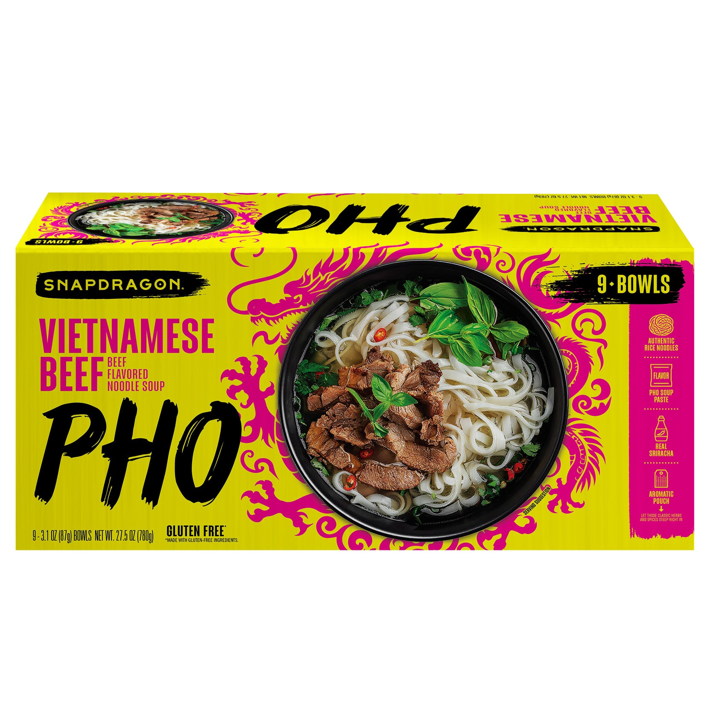

Pho

Recipe Overview:
This is my go to recipe for a quick bowl of pho at home.
- Prep: 15 Minutes
- Cook: 15 Minutes
- Serves: 1
Ingredients
- 1 bowl or packet of instant pho, I use Snapdragon Vietnamese Beef Pho

Optional Ingredients
- 1 clove of garlic, minced
- 1 medium shallot or a quarter of a medium white onion, thinly sliced
- 1 small thai chili or other fresh pepper, thinly sliced
- 1/2 inch knob of ginger, peeled and grated
- 1/2 tsp soy sauce
- 1/2 tsp toasted sesame oil
- 1/2 tbsp fish sauce, for depth of flavor
- 1 tsp extra virgin olive oil, or any neutral tasting oil
- 1/4 cup rinsed bean sprouts
- 1/4 cup sliced vegetable of your choosing, I like to add carrot
- 8 pieces of frozen, shaved beef chuck
- 4 pieces of organic tofu, cut bite sized
- 1 small bunch of cilantro, chopped for garnish
- sriracha and/or hoisin sauce as garnish to taste
Steps:
- Heat a medium saucepan over medium-low heat
- While the pan gets hot prep your vegetables
- With your veggies prepped and your pan hot, add the oils, soy, garlic, ginger, and any
seasoning packets that came with the instant pho (save the aeromatics pouch for later)
- Let the spices brown until fragrant (2 minutes)
- At this point we are going to turn the heat up to high and add our water measured up to the fill line of the pho bowl/package
- Now you can add the aeromatics pouch that comes with the instant pho, as well as the fish sauce (stinky!)
- Cover the saucepan and bring to a rolling boil
- Once boiling add any other protein to the pot, including tofu and beef
- After letting your proteins cook for a minute, add your noodles and cover again
- Rice noodle cook time will vary depending on packaging, but at a rolling boil most should be done in under 1 minute for al dente
- Transfer noodles and broth into a bowl and top with any garnish
- Enjoy a nice, light bowl of pho noodle soup!